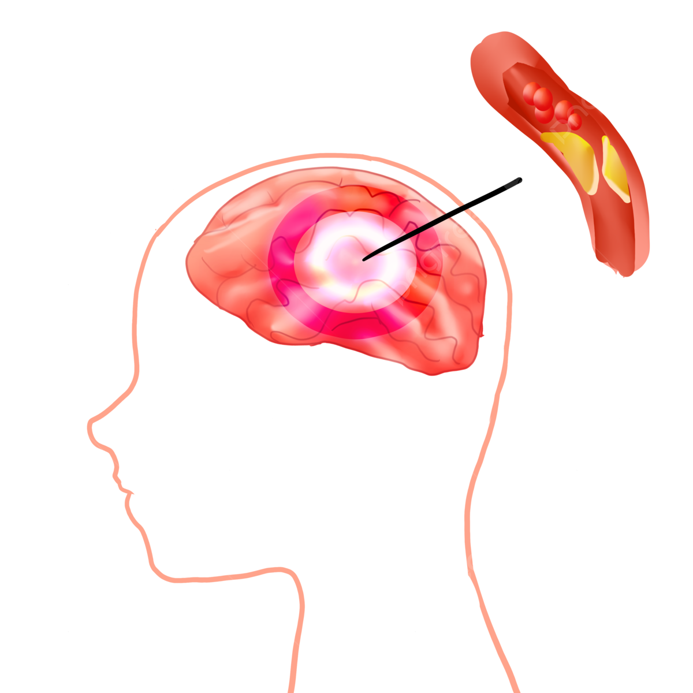
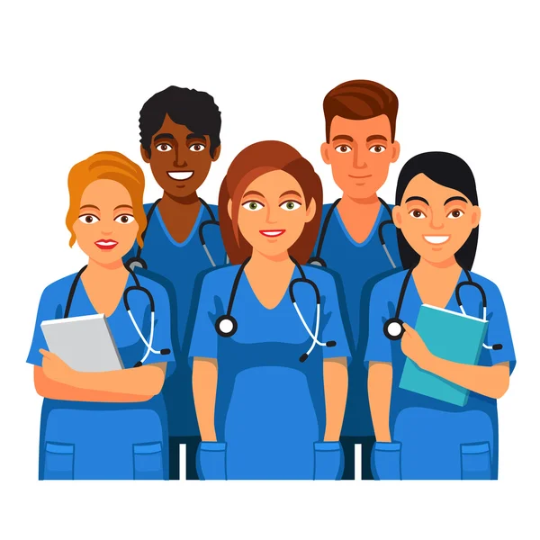
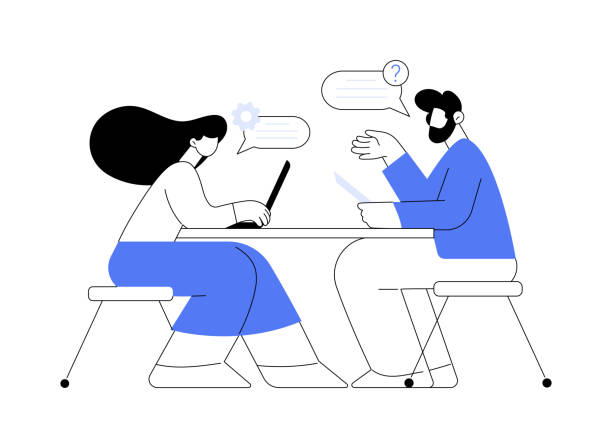
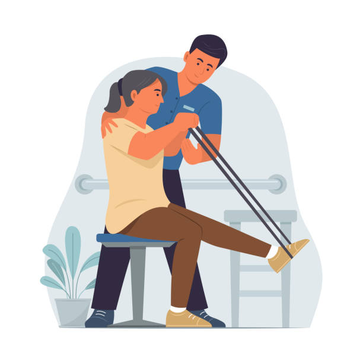
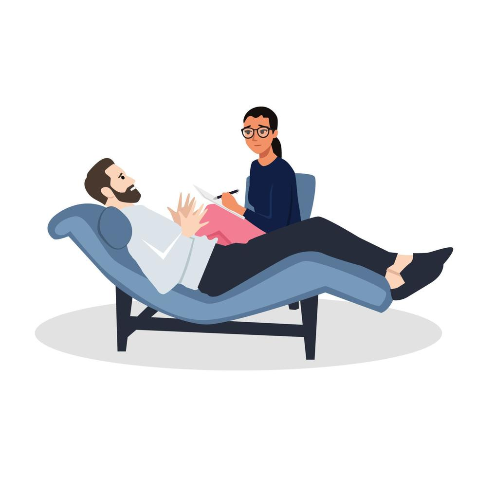
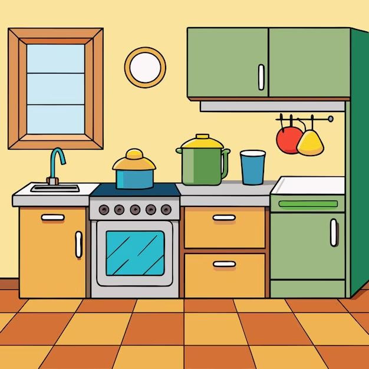
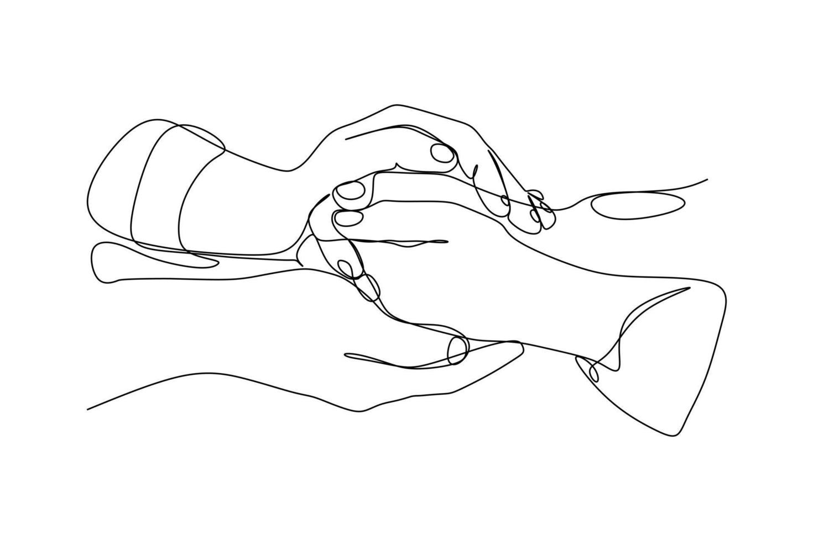
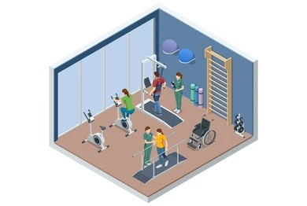

Resinapsis: vuelve a conectar con tu vida
Atención integral para personas jóvenes tras un ictus y apoyo especializado a sus cuidadores.
Un espacio donde la recuperación física, emocional y social se trabajan de forma coordinada, acompañando cada paso del proceso.

Accidente Cerebrovascular
El accidente cerebrovascular (ACV), también conocido como ictus, constituye una de las principales causas de discapacidad adquirida en la población adulta, generando secuelas que pueden afectar de forma significativa a la autonomía personal, la participación social y la calidad de vida.

Qué es y causas principales
El ictus se produce como consecuencia de una alteración brusca del flujo sanguíneo cerebral, ya sea por obstrucción o por rotura de un vaso sanguíneo. Entre sus principales factores de riesgo se encuentran la hipertensión arterial, la diabetes, el tabaquismo, el sedentarismo y determinados antecedentes cardiovasculares.
Secuelas más frecuentes
Tras un ictus pueden aparecer secuelas motoras, alteraciones del equilibrio, dificultades del habla, trastornos cognitivos, disfagia, cambios emocionales o limitaciones en la autonomía para realizar actividades básicas e instrumentales de la vida diaria.
Consecuencias del ACV
Las consecuencias del ictus pueden afectar no solo a la persona que lo ha sufrido, sino también a su entorno familiar y social, condicionando cambios en la dinámica cotidiana, en el rol laboral y en la necesidad de apoyos continuados durante el proceso de recuperación.
Sobre nosotros
Resinapsis es un centro sociosanitario ubicado en Alcorcón, especializado en la atención a personas entre 18 y 55 años que han sufrido un ictus.
El proyecto nace con el objetivo de dar continuidad al proceso de recuperación tras el alta hospitalaria, abordando no solo las necesidades físicas, sino también las cognitivas, emocionales y sociales.
Se trabaja desde un enfoque centrado en la persona, favoreciendo la autonomía, la adaptación a la nueva realidad y la mejora de la calidad de vida, incorporando también a los cuidadores como parte esencial del proceso.

Servicios
Resinapsis ofrece una atención integral adaptada a las necesidades de cada persona, mediante un enfoque coordinado entre profesionales sanitarios.

Valoración integral
Valoración integral
Evaluación inicial realizada por un equipo formado por medicina, enfermería, fisioterapia, terapia ocupacional, logopedia, psicología y trabajo social.

Rehabilitación funcional
Rehabilitación funcional
Intervenciones dirigidas a mejorar la movilidad, el equilibrio y la autonomía en las actividades de la vida diaria.

Atención psicológica y emocional
Atención psicológica y emocional
Apoyo orientado a la adaptación al proceso, manejo emocional y mejora del bienestar psicológico.

Logopedia y disfagia
Logopedia y disfagia
Recuperación de la comunicación y tratamiento de alteraciones de la deglución, incluyendo formación a cuidadores para un manejo seguro en domicilio.

Terapia ocupacional (“La Casita”)
Terapia ocupacional (“La Casita”)
Entrenamiento en un entorno simulado del hogar para facilitar la autonomía en actividades cotidianas.

Apoyo a cuidadores
Apoyo a cuidadores
Formación, acompañamiento y herramientas para mejorar el cuidado y prevenir el desgaste.
El Proyecto
Resinapsis surge como una propuesta innovadora de continuidad asistencial tras el alta hospitalaria, orientada a personas jóvenes con secuelas derivadas de un ictus y con potencial de recuperación.
El modelo incorpora una visión integral de la rehabilitación, incluyendo la dimensión física, cognitiva, emocional, funcional y social, así como la participación activa de las familias como parte esencial del proceso terapéutico.

¿A quién va dirigido?
El centro está dirigido a personas entre 18 y 55 años que han sufrido un ictus y se encuentran en fase de recuperación.
Asimismo, incluye a sus cuidadores principales, proporcionando formación y apoyo para afrontar el proceso de cuidado de forma segura y eficaz.
Cómo acceder
El acceso a Resinapsis puede realizarse mediante derivación desde hospitales, centros de salud o servicios sociales, así como por contacto directo.
Cada caso es valorado de forma individual por el equipo profesional, con el objetivo de adaptar la intervención a las necesidades específicas de la persona y su entorno.
Instalaciones
El centro dispone de un espacio moderno, accesible y adaptado a las necesidades de personas con daño neurológico.

Gimnasio de rehabilitación
Gimnasio de rehabilitación
Espacio destinado al trabajo físico y funcional, orientado a la recuperación de la movilidad, el equilibrio y la coordinación.

Consultas y salas terapéuticas
Consultas y salas terapéuticas
Áreas específicas para logopedia, psicología, enfermería, medicina y trabajo interdisciplinar.

Entorno doméstico simulado
Entorno doméstico simulado
Zona adaptada para terapia ocupacional que facilita el entrenamiento en actividades cotidianas en un contexto similar al hogar.
El diseño del espacio favorece la seguridad, la comodidad y la participación activa en el proceso de recuperación.